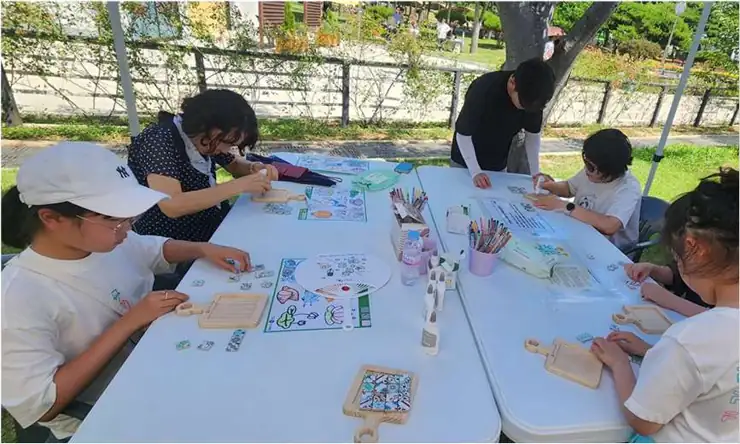
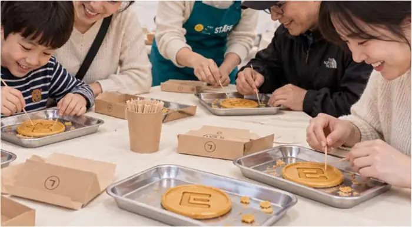
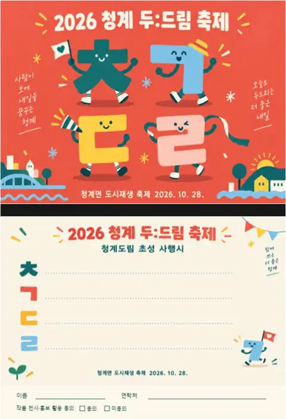

주민협의체 · 누구나 라면
전문 조리 인력 중심의 음식 운영. ‘가을 캠핑 감성’을 담은 부스 구상안입니다.
계획안 3쪽 · 참고 이미지

주민과 상인, 목포대학교 학생이 함께 만드는 「2026 청계 누구나 두:드림 축제」. 행사 계획안의 원본 이미지와 프로그램을 확인하고 참여를 신청하세요.
원본: 「2026년 청계 누구나 두:드림 축제 계획(안)」 2쪽 포스터. 계획안의 그림·부스 사진은 참고 시안 또는 예시로, 실제 행사 모습이나 최종 설치 형태가 아닙니다.
행사 계획안에 수록된 이미지를 그대로 사용했습니다. 음식 부스·체험 운영·부스 수량은 조정될 수 있습니다.
전문 조리 인력 중심의 음식 운영. ‘가을 캠핑 감성’을 담은 부스 구상안입니다.

11:00~17:00 중 점심 12:00~13:00 제외. 회차제로 운영하는 체험안입니다.

청계도림 초성으로 달고나 모양 뽑기. 회차별 정원과 대기 순서를 관리하는 안입니다.

누구나 무료 참여. 11:00~17:00 도시재생센터 부스에서 작성·접수·게시하는 안입니다.

청계면 도시재생 사업을 알리고 체류와 교류를 유도하는 홍보·체험 부스입니다.

상인회는 참여 희망 판매부스를 검토하고, 실제 부스 구성과 설치 장소를 협의합니다.
단체별 프로그램은 계획안 기준이며 변경될 수 있습니다.

상품권 사용 가능 상점을 사전에 협의하고 식별 가능한 안내물을 부착하는 방안을 논의 중입니다.
5천원 쿠폰 상가 신청 →원본 계획안에 상품권 액면 금액은 명시되어 있지 않습니다. 5천원 쿠폰은 청계면상인회 별도 모집 안내 기준이며 사용·정산 세부 조건은 추후 공지합니다.
모집 목표 5개 (계획안 상인회 3~5개·안) · 신청 마감일 미지정 · 현재 상태: 조회 중